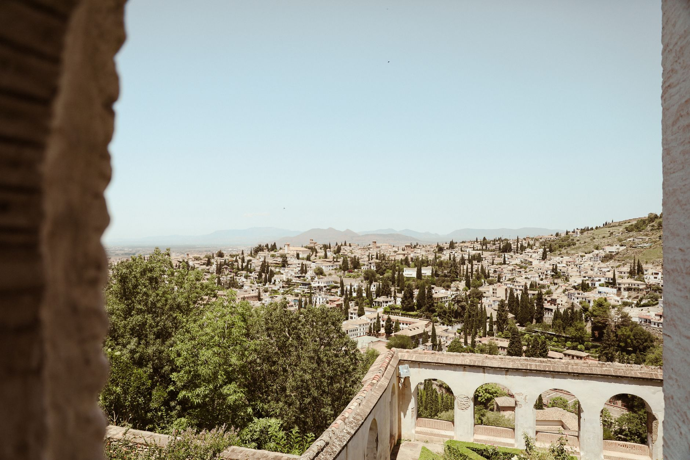
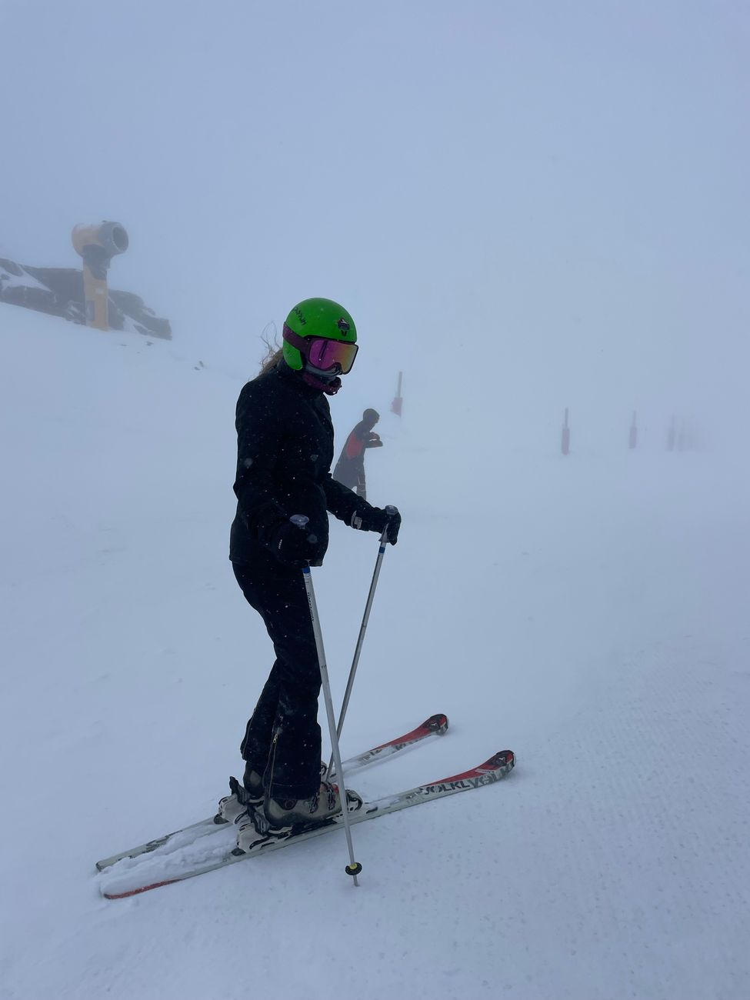
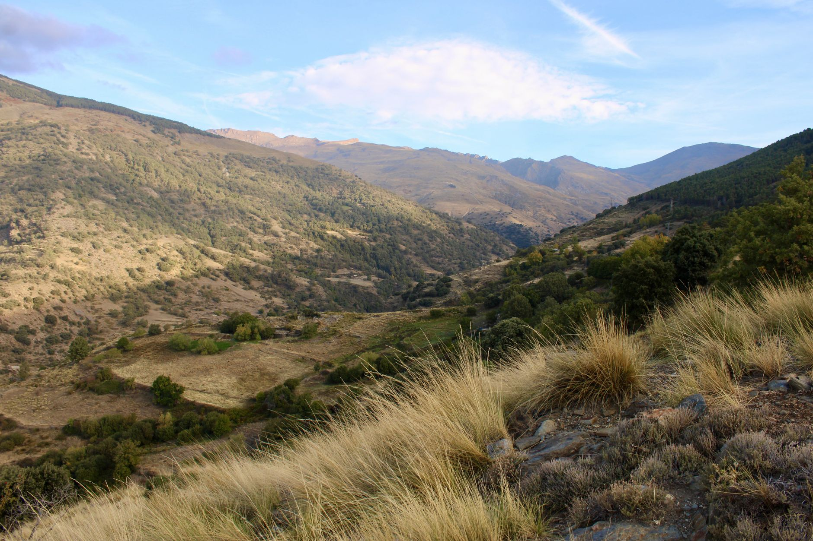

Photo: Ramon Karolan / Pexels
The road out of Granada climbs into the Sierra Nevada faster than almost anywhere else in Europe, past the ski resort of Pradollano to a barrier at Hoya de la Mora, roughly 2,600 metres up. That barrier is the point: beyond it, the highest paved road in continental Europe keeps climbing toward Pico Veleta at 3,398 metres, but it's been closed to cars since 1999. Past Hoya de la Mora, it's cyclists and walkers only.
So this isn't a drive to a summit. It's a drive to the exact point where the road stops being a road for cars and starts being one of Europe's hardest cycling climbs instead.
-

GranadaThe start, in the shadow of the Alhambra. -

PradollanoSierra Nevada's ski resort, the last real town on the climb. -

Hoya de la MoraThe barrier at roughly 2,600 m, closed to cars since 1999. Pico Veleta keeps climbing to 3,398 m from here, on foot or by bike only.
Stop photos: Alina Rossoshanska, Mery Stockera, Charlie Jordan / Pexels
Cyclists treat the road beyond the barrier as one of the toughest climbs in Spain. If you want to see the true summit, you'd need to park at Hoya de la Mora and continue on foot or by bike, like everyone else does now.
Good to know before you drive it
- The road beyond the barrier is only fully rideable (bike or on foot) roughly June to mid-September; snow closes even the upper walking route most of the year.
- Spain's speed limits: 120 km/h on motorways, 90-100 km/h on conventional roads, 50 km/h in towns. The mountain road itself is signed lower in the switchbacks.
- This road doubles as ski-resort access in winter. Snow chains or winter tires can be required at short notice even when Granada itself is mild.
- 41 km is short, but the climb is steep enough that it's worth planning as a half-day trip, not a fast there-and-back.
Ready to book this drive? This route runs 41 km and about 0.8 hours behind the wheel, entirely inside Auto Europe's coverage area.
We book through Auto Europe. It compares Hertz, Sixt and the other major agencies in one search, with cross-border and one-way terms visible before checkout instead of buried in each company's own fine print.
Compare car rental prices →This is an affiliate link. Booking through it may earn Travel Gap a commission at no extra cost to you.
Read the full Europe road trip planning guide for what to check before you book anywhere on the continent.